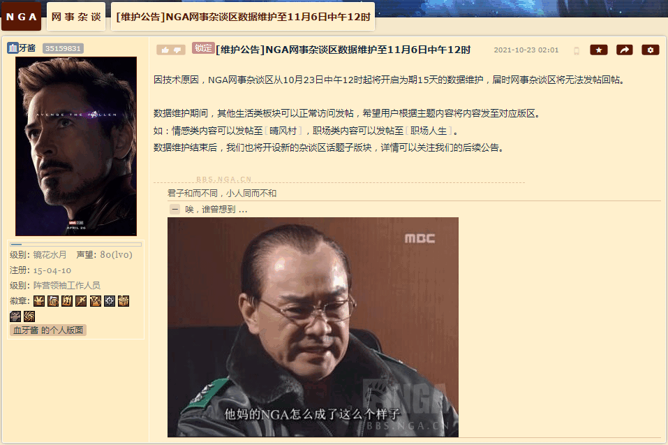
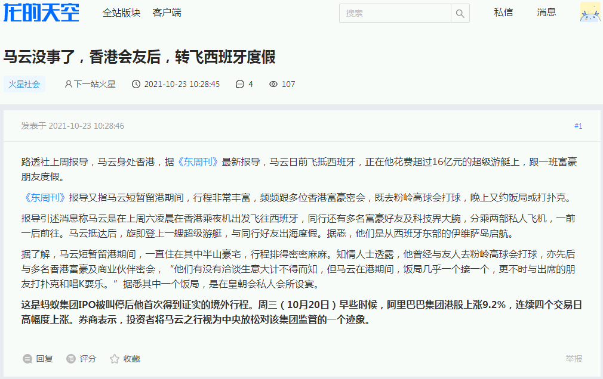
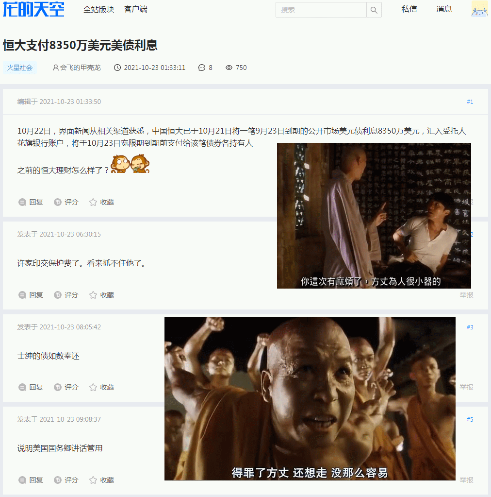

前一篇
目录
后一篇
主页
［
20211023
］“得罪了英特纳雄耐尔人体器官贩卖康采恩还想走？没那么容易！”
同时成立的逆否命题：能走掉很容易的都没得罪英特纳雄耐尔人体器官贩卖康采恩
按照职业习惯严密的考虑问题：虽然怀疑走掉的都与英特纳雄耐尔人体器官贩卖康采恩达成了全面战略协作伙伴关系，但是没有证据。
前情提要：
“看谁都是‘钦定文痞’的受迫害妄想狂”



2021-10-23 10:53:21